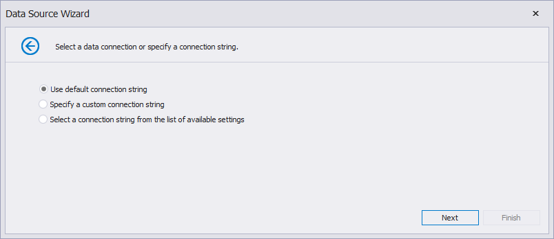

Bind a Report to an Entity Framework Data Source
This document describes how to use an Entity Framework data source to bind a report to data provided by an Entity Framework data context:
Create a Report
Select a Data Source and Specify Data Context
Click the report's smart tag. In the invoked actions list, expand the drop-down menu for the Data Source property and click Add New DataSource.

On the first page of the invoked Data Source Wizard, select the Entity Framework and click Next.
On the next page, select the required data context. You can bind it to an Entity Framework data context that is contained in either the current project assembly or a separate assembly.
To use a data context that exists in the current project assembly, select it in the Choose Context list and click Next.

Select a Connection String
On the next page, specify a connection string used to establish a data connection. The following options are available:
Default Connection String
Choose the default connection string if it is specified in the application’s configuration file.

Custom Connection String
Specify a custom connection string in the connection string editor and choose whether or not to store the string in the application’s configuration file.
Predefined Connection String
Select an existing connection string available in the current project.
Add Stored Procedures (Optionally)
The next wizard page is available only if the current entity data model contains stored procedures. This page allows you to add stored procedures to the data source and configure their parameters. Click Finish to exit the wizard.

Apply Filter Criteria
On the last page, you can apply filter criteria to the resulting query. Click Finish to create the data source.

Result
The newly created data source will be displayed in the Data Sources node of the Report Explorer. Additionally, the hierarchy of the data source will be reflected by the Field List.